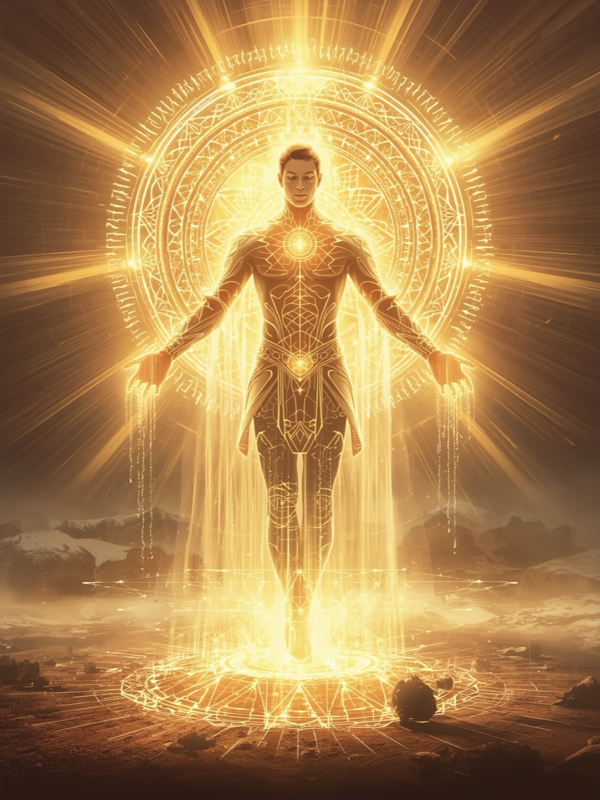

The Inner Dawn Illumination
Enter the portal of renewal where spirit rises from shadow into the brilliance of its own light.
Choose your archetype and step into the light of becoming.
In the hush before sunrise, illumination unfolds from within.
Within Auric Bloom, two divine archetypes await your soul's choosing. Each embodies the sacred frequency of golden awakening, yet expresses it through different currents of being. Elyra whispers as the bringer of morning that reminds you how to rise with grace, while Auryn stands as the architect of renewal who rebuilds harmony from the fragments of chaos.
